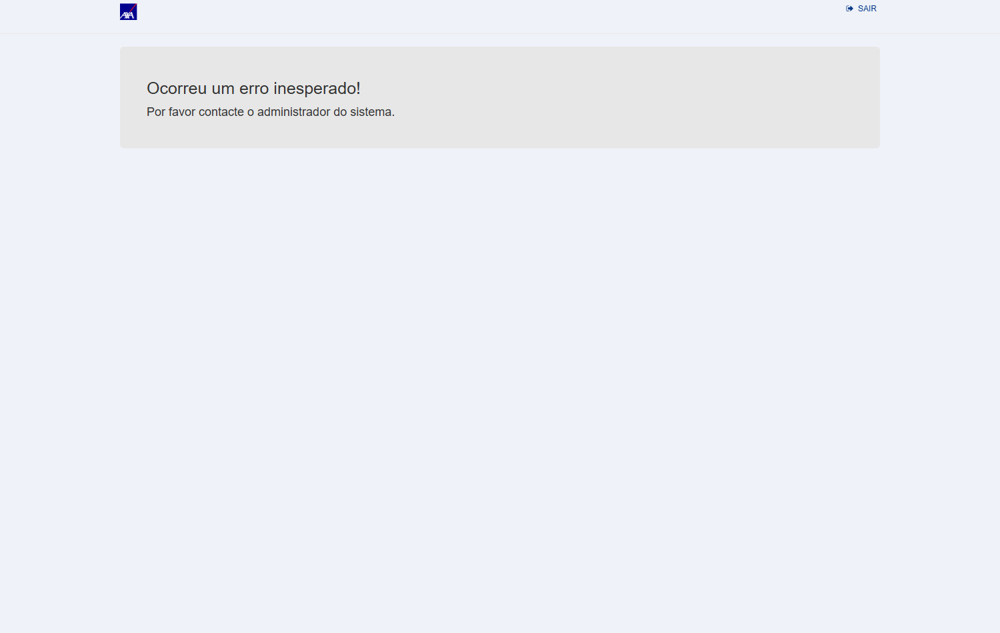

In scope: processamento do conversor de Exportação (ramo 32) com SqlBulkCopy sob Ind_Conversor_Processamento_BulkCopy: paridade funcional, performance, atomicidade, regressão (indicativo inativo), multi-seguradora.
Out of scope: etapa de Conversão; conversores Nacional/RCTR-VI/Importação; produção.
Pré-requisitos:
- Ambiente: CITWEB HML AXA —
ROT_AUTO / •••••• (senha no .env) - Fix de Exportação deployado em HML AXA
- Cotação USD (código 220) vigente — Tabelas → Cadastros → Cotações de Moeda
- Arquivo de Exportação com ≥ 7.000 registros [massa a gerar] + arquivo pequeno p/ smoke
- Apólice(s) de Exportação AXA; acesso SQL HML p/ fila de pendentes e averbações
Grupo 1 — Processamento BulkCopy (funcional)
3▼Objetivo
Garantir que a Conversão (não alterada) segue funcionando após o refactoring do Processamento.
Passos
- Logar no CITWEB HML AXA
- Navegar ao Conversor de Exportação [caminho a validar]
- Upload do arquivo pequeno + Conversão
- Confirmar conversão sem erro
Resultado Esperado
Ambiente: CITWEB HML · build V 1.0.260729.1115 · 31/07/2026
Obtido
Banner "Conversão do arquivo concluído com sucesso!" · Total 20 / Conversões incluídas 20 / Registros com erro 0 (idem no lote de 7.500: 7500/7500/0). Layout CARD 7707 - REFATORAÇÃO EXPORTAÇÃO.
Observação
Rota correta: CITWEB → tile Conversor de Arquivos (app=CONVERSOR) → Converte Arquivo → Exportação (/Conversor/Conversor?menu=ConversorExportacao). O layout da dev aparece normalmente para o usuário QA neste sistema.


Objetivo
Verificar que o processamento BulkCopy produz o mesmo resultado do fluxo linha a linha.
Passos
- Processar com indicativo ativo
- Anotar Aceitas/Rejeitadas
- Comparar com o mesmo arquivo em fluxo linha a linha (CT-CEX-007)
- SQL: conferir averbações gravadas
Resultado Esperado
Ambiente: CITWEB HML · build V 1.0.260729.1115 · 31/07/2026
Obtido
Banner "Processamento do arquivo concluído com sucesso!" · Averbações incluídas 20 / Registros com erro 0. Aceitas + Rejeitadas = Total em todas as execuções. SQL: definitivas 2026003769–2026003788 gravadas em tb_mov_avb_int_cit (IS total R$ 1.104.077,20); fila de pendentes drenada a 0.
Observação
Controller exercitado: ProcessamentoAverbacoesExportacao/Processar — o alvo do refactor.


Objetivo
Validar processamento de grande volume sem timeout — objetivo central do refactoring.
Passos
- Processar arquivo ≥ 7.000 registros
- Cronometrar tempo total
- Confirmar conclusão sem timeout + gravação das averbações válidas
Resultado Esperado
Ambiente: CITWEB HML · build V 1.0.260729.1115 · 31/07/2026
Obtido
Conversão de 7.500 em 148,7s (7500/7500, 0 erro) e Processamento em 191,5s — Averbações incluídas 7.500 / Registros com erro 0, sem timeout e sem erro de servidor. SQL: 7.500 definitivas 2026003789–2026011288 gravadas, IS total R$ 414.028.950,00; fila de pendentes zerada.
Observação
Massa gerada pelo QA alinhada ao layout da dev: exp_citweb_7500_7707.xlsx (25 colunas A..Y, sem cabeçalho).

Grupo 2 — Performance
2▼Objetivo
Medir throughput e comparar com o critério herdado do RCTR-VI (≥ 0,5s/registro).
Passos
- Processar (mesma apólice) e cronometrar
- tempo médio/registro = total ÷ nº registros
- Comparar com baseline produção Exportação e o critério
Resultado Esperado
Ambiente: CITWEB HML · build V 1.0.260729.1115 · 31/07/2026
Obtido
191,5s ÷ 7.500 registros = 0,026 s/registro na mesma apólice (1980). Critério herdado do #7471: ≤ 0,5 s/registro. Comparativo colhido na mesma sessão: 500 registros em 16–19s (0,032–0,038 s/reg) na AXA contra 0,074 s/reg na KOVR (indicativo inativo, gravação linha a linha) — o ganho do BulkCopy é visível no throughput.
Observação
Tempo cronometrado no cliente, do clique em PROCESSAR até o banner de conclusão.

Objetivo
Garantir que o BulkCopy não introduziu serialização/lock entre usuários (padrão CT-RVI-009).
Passos
- [Sessão A] processar arquivo A
- [Sessão B] processar arquivo B em paralelo
- Confirmar que ambos concluem sem travar
Resultado Esperado
Ambiente: CITWEB HML · build V 1.0.260729.1115 · 31/07/2026
Obtido
Com as duas sessões processando lotes distintos ao mesmo tempo, a Sessão A conclui normalmente (500/500, 0 erro) e a Sessão B falha com HTTP 500 em POST /Conversor/ProcessamentoAverbacoesExportacao/Processar, exibindo a página "Ocorreu um erro inesperado!". Reproduzido em 2 de 3 tentativas — falha sempre que os dois processos iniciam no mesmo instante; quando há alguns segundos de defasagem, ambos passam. Contraprova: o mesmo lote B, reprocessado isolado, conclui 500/500 em 17,4s — ou seja, o erro é específico da concorrência, não do lote nem do layout.
Observação
Esperado: ambas as sessões concluem sem travar nem falhar. Stack trace não acessível ao QA — fica no LogErro31072026.txt do servidor (a dev consegue ver). Cenário análogo ao CT-RVI-009 do #7471 (fila de Processar compartilhada por nome de layout).


Grupo 3 — Atomicidade / Integridade
1▼Objetivo
CA crítico: exclusão do pendente só após sucesso do BulkCopy — em falha, nenhum registro removido sem insert persistido.
Passos
- SQL: anotar fila de pendentes antes
- Processar lote que dispare falha
- SQL: confirmar que os pendentes do lote permanecem (não excluídos)
- Confirmar zero averbação perdida
Resultado Esperado
Ambiente: CITWEB HML · build V 1.0.260729.1115 · 31/07/2026
Obtido
O HTTP 500 do CT-CEX-005 forneceu a falha real (sem necessidade de injeção artificial). Estado imediatamente após a falha: os 500 registros do lote permaneceram na fila (tb_lay_out_cvr_tmp_act_int_cit) e zero averbação do lote foi gravada — exclusão do pendente não ocorreu sem insert persistido. Em seguida o mesmo lote foi reprocessado e concluiu 500/500: recuperação integral, nenhuma averbação perdida. Integridade de numeração também confirmada: 10.020 averbações geradas no dia sem nenhuma definitiva duplicada.
Observação
Atomicidade insert+delete preservada — CA crítico atendido.


Grupo 4 — Regressão
2▼Ind_Conversor_Processamento_BulkCopy INATIVO (confirmado por comentário do dev no card; mesma seguradora usada na regressão do #7471). Login CITWEB KOVR HML: ROT_AUTO / •••••• (senha no .env).Objetivo
Garantir que, numa seguradora com o indicativo desligado, o processamento mantém o fluxo linha a linha original — regressão zero. O teste é feito em outra seguradora naturalmente com o indicativo off, não desligando o indicativo da AXA.
Passos
- Logar no CITWEB KOVR HML (
ROT_AUTO / •••••• (senha no .env)) — seguradora com a flag desligada - Converter + processar um arquivo de Exportação
- Confirmar resultado idêntico ao comportamento anterior à PBI (gravação linha a linha)
Resultado Esperado
Ambiente: CITWEB HML · build V 1.0.260729.1115 · 31/07/2026
Obtido
Em CITWEB KOVR HML (seguradora com Ind_Conversor_Processamento_BulkCopy inativo): conversão 500/500 e processamento 500 averbações incluídas / 0 erro em 37,2s. SQL: definitivas 2026001787–2026002286 gravadas, fila zerada. Resultado funcional idêntico à AXA; throughput 0,074 s/reg contra 0,032–0,038 s/reg na AXA para o mesmo volume — coerente com gravação linha a linha.
Observação
Massa e layout criados pelo QA na KOVR (apólice 206022026, layout QA 7707 EXP KOVR). Os DE/PARA da KOVR exigem valores cadastrados para Complemento do Estado, País, Complemento do País, Mercadoria e Embalagem — código direto é recusado na conversão.


Objetivo
Solução escalável: aplicada a outra seguradora deve funcionar sem código específico.
Passos
- Ativar indicativo em outra seguradora com conversor de Exportação
- Processar arquivo de Exportação
- Confirmar paridade funcional sem ajuste de código
Resultado Esperado
Ambiente: CITWEB HML · build V 1.0.260729.1115 · 31/07/2026
Obtido
Não executado: o CT exige ativar o Ind_Conversor_Processamento_BulkCopy em outra seguradora com conversor de Exportação. O indicativo não está em nenhuma das bases HML (é appSettings/web.config por deploy), então o QA não consegue ligá-lo nem ler seu estado. Evidência parcial já obtida: o mesmo código rodou em duas seguradoras sem qualquer customização — AXA (indicativo ativo) e KOVR (inativo), ambas com paridade funcional, o que sustenta o CA de solução multi-seguradora.
Observação
Pendente de informação da dev: em quais seguradoras o indicativo está/será ativado. Assim que confirmado, o CT roda com os mesmos scripts (já multi-tenant).
| Critério de aceite | CT(s) |
|---|---|
| Gravação via SqlBulkCopy quando indicativo ativo | CT-CEX-002, 003 |
| Tempo ≤ alvo p/ ≥7.000 registros (≥0,5s/reg) | CT-CEX-003, 004 |
| Paridade funcional (Aceitas+Rejeitadas) | CT-CEX-002 |
| Falha no BulkCopy → nenhuma averbação perdida | CT-CEX-006 |
| Indicativo inativo → regressão zero | CT-CEX-007 |
| Escalável/multi-seguradora | CT-CEX-008 |
CAs herdados do #7471/refinamento Andreia (mesma frente de refactoring). Card #7707 sem CA formal → derivados e a confirmar no aceite.
- Dev não iniciado (Alto p/ cronograma): card em Pronto para desenvolvimento — execução depende do deploy. Mitigação: plano pronto para executar assim que subir em HML.
- Atomicidade insert+delete (Alto): risco de perda de averbação se a exclusão não for diferida. Mitigação: CT-CEX-006 bloqueante.
- Massa ≥7.000 registros (Médio): gerar arquivo grande de Exportação. Mitigação: mesma estratégia do #7471/#7681.